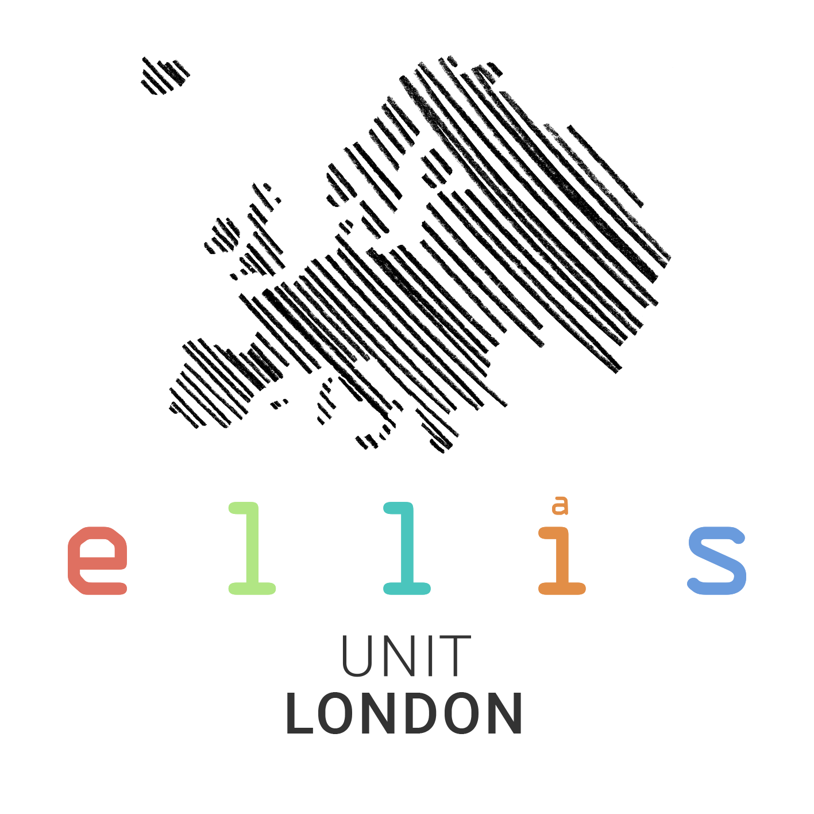
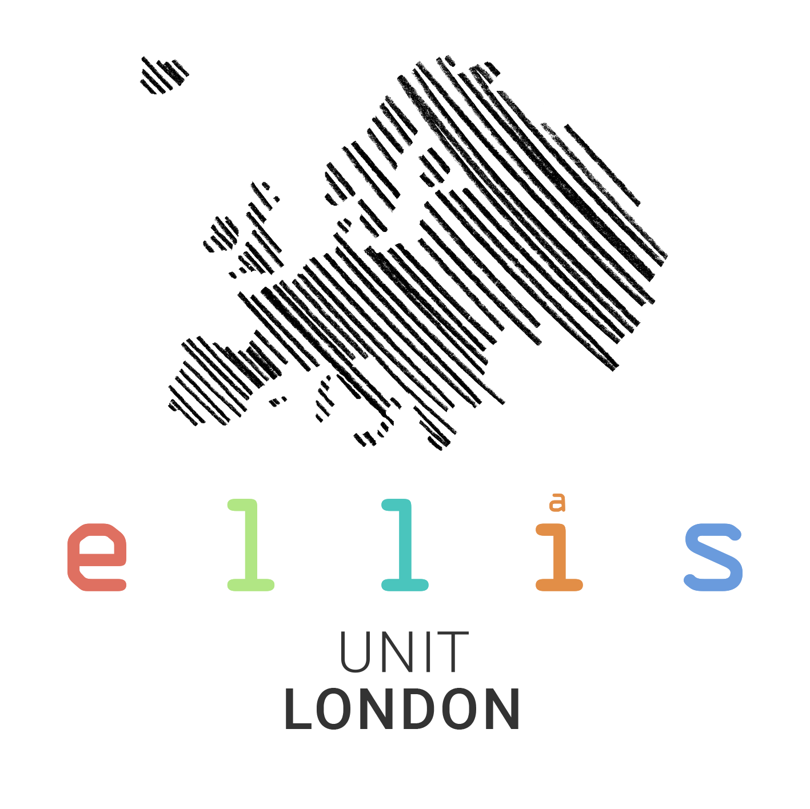

| Mon, Feb 24, 2025 | Submissions open |
| Fri, Apr 11, 2025 | Submissions close |
| Fri, Apr 18, 2025 | Decisions announced |
| Fri, May 2, 2025 | Registration closes |
| Thu, May 15, 2025 | Workshop begins |




1st Workshop 15–16 May 2025, London, UK
Bayesian inference has become a popular framework for decision-making given its consistent and flexible handling of uncertainty. In this regime, however, the statistician is subject to several surprisingly strong assumptions, which are violated in almost all modern machine learning settings. This is in fact well-understood, and has led to a range of methods which aim to retain characteristics of Bayesian uncertainty quantification without the restrictive assumptions that underpin it. Collectively, this body of work is sometimes referred to as “generalised Bayes”. This name, however, does not capture the main appeal of these conceptual frameworks: by unapologetically endorsing posteriors that lie outside the confines of Bayesian epistemology, they are intrinsically post-Bayesian. This is not a minor difference in semantics, but a major shift in outlook.
The first workshop on Advances in post-Bayesian methods aims to bring together the currently disparate subfields, stretching from PAC Bayes, generalised Bayes, predictive resampling, and Martingale posteriors, to online learning and beyond. With each subfield growing faster now than ever before, it is imperative that we bring them together to form a unified post-Bayesian front. And given the growing public interest in probabilistic AI, aligning the direction of our field is of especially critical importance. Over the course of two days, we will host eight invited talks from leaders across the post-Bayesian landscape, eight contributed talks, and a poster session to ignite discussion and innovation in our growing community, and will compliment the post-Bayesian seminar series.
All of the sessions will be held in the Denys Holland Lecture Theatre in Bentham House at UCL. The nearest tube stations are Euston, Warren Street, King’s Cross, and Russell Square.
The registration fee is 10.00 GBP, and includes access to all presentations over two days, catered lunch and coffee breaks, and the poster session.
To register, please follow this link.
| Mon, Feb 24, 2025 | Submissions open |
| Fri, Apr 11, 2025 | Submissions close |
| Fri, Apr 18, 2025 | Decisions announced |
| Fri, May 2, 2025 | Registration closes |
| Thu, May 15, 2025 | Workshop begins |
We are currently accepting submissions of contributed talks and posters on all things post-Bayes! Contributed talks are 15 minutes in length, and we can accommodate posters of either A0 portait or A1 landscape size.
Please submit your contributed talk and/or poster through this form.
For speakers
Please bring your slides to your session on a USB stick, or email them to
postbayesml [at] gmail [dot] comahead of time.
More to be announced soon!
